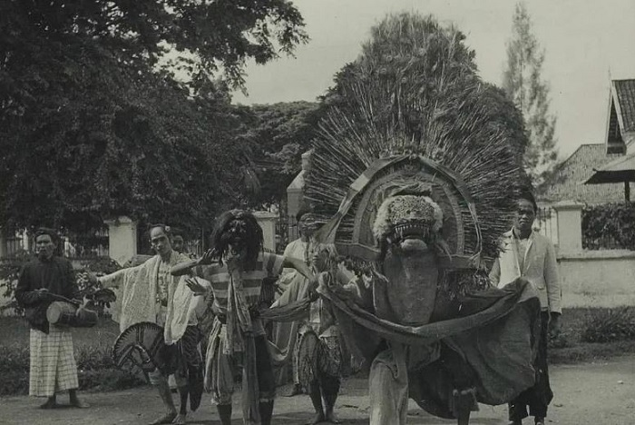
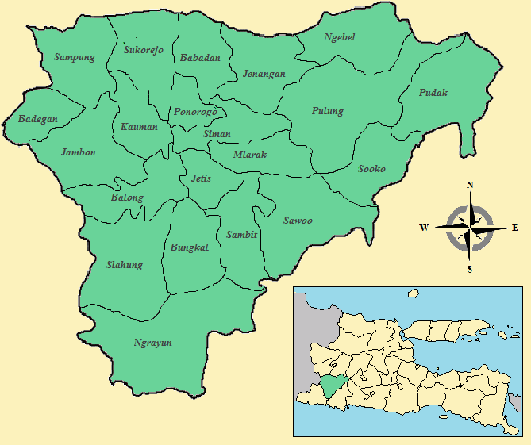
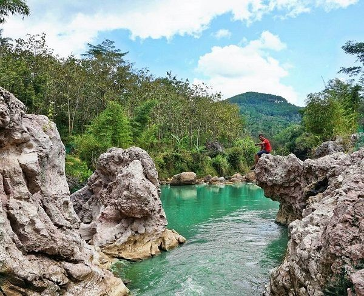
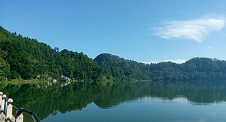
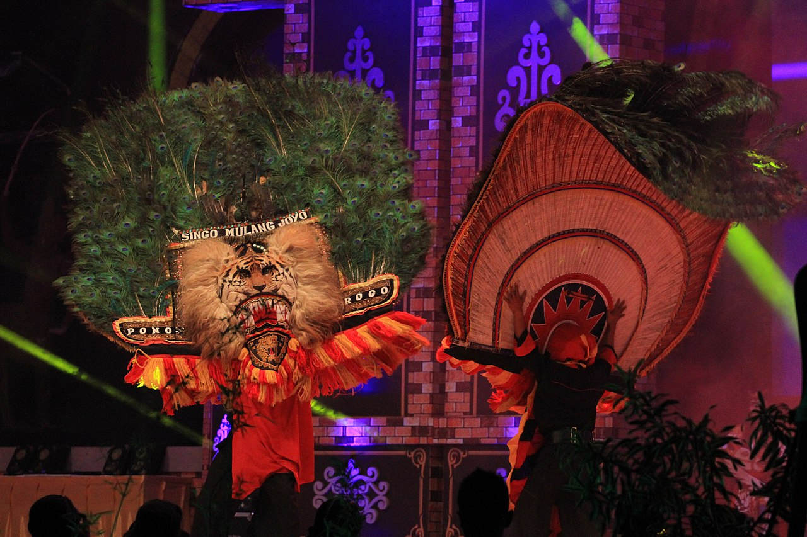

Sejarah

Menurut Babad Ponorogo, berdirinya Kabupaten Ponorogo dimulai setelah Raden Katong sampai di wilayah Wengker.
Pada saat itu Wengker dipimpin oleh Surya Ngalam yang dikenal sebagai Ki Ageng Kutu.
Raden Katong lalu memilih tempat yang memenuhi syarat untuk pemukiman (yaitu di Dusun Plampitan, Kelurahan Setono, Kecamatan Jenangan sekarang).
Melalui situasi dan kondisi yang penuh dengan hambatan, tantangan, yang datang silih berganti, Raden Katong, Selo Aji, dan Ki Ageng Mirah beserta pengikutnya
terus berupaya mendirikan pemukiman. Tahun 1482–1486 M, untuk mencapai tujuan menegakkan perjuangan dengan menyusun kekuatan, sedikit demi sedikit kesulitan tersebut dapat teratasi,
pendekatan kekeluargaan dengan Ki Ageng Kutu dan seluruh pendukungnya ketika itu mulai membuahkan hasil.
Dengan persiapan dalam rangka merintis kadipaten didukung semua pihak, Bathoro Katong (Raden Katong) dapat mendirikan Kadipaten Ponorogo pada akhir abad XV, dan ia menjadi adipati yang pertama.
Kadipaten Ponorogo berdiri pada tanggal 11 Agustus 1496, tanggal inilah yang kemudian ditetapkan sebagai hari jadi kota Ponorogo. Penetapan tanggal ini merupakan kajian mendalam atas dasar bukti peninggalan benda-benda purbakala berupa sepasang batu gilang yang terdapat di depan gapura kelima di kompleks makam Batara Katong dan juga mengacu pada buku Hand book of Oriental History. Pada batu gilang tersebut tertulis candrasengkala memet berupa gambar manusia yang bersemadi, pohon, burung garuda dan gajah. Candrasengkala ini menunjukkan angka tahun 1418 Saka atau tahun 1496 M. Sehingga dapat ditemukan hari wisuda Bathoro Katong sebagai Adipati Kadipaten Ponorogo yaitu hari Minggu Pon, tanggal 1 Besar 1418 Saka bertepatan tanggal 11 Agustus 1496 M atau 1 Dzulhijjah 901 H. Selanjutnya melalui seminar Hari Jadi Kabupaten Ponorogo yang diselenggarakan pada tanggal 30 April 1996 maka penetapan tanggal 11 Agustus sebagai Hari Jadi Kabupaten Ponorogo telah mendapat persetujuan DPRD Kabupaten Ponorogo.
Sejak berdirinya Kadipaten Ponorogo di bawah pimpinan Raden Katong, tata pemerintahan menjadi stabil dan pada tahun 1837 Kadipaten Ponorogo pindah dari Kota Lama ke Kota Tengah menjadi Kabupaten Ponorogo hingga sekarang
Geografis

Kabupaten Ponorogo mempunyai luas wilayah 1.371,78 km² dengan ketinggian antara 92 sampai dengan 2.563 meter di atas permukaan laut yang dibagi menjadi 2 subarea, yaitu area dataran tinggi yang meliputi Kecamatan Ngrayun, Sooko, Pulung, dan Ngebel sisanya merupakan area dataran rendah.
Sungai yang melewati ada 14 sungai dengan panjang antara 4–58 km sebagai sumber irigasi bagi lahan pertanian dengan produksi padi maupun hortikultura. Sebagian besar dari luas yang ada terdiri dari area kehutanan dan lahan sawah, sedangkan sisanya digunakan untuk ladang pekarangan.
Wisata

Setiap tanggal 1 Muharram (1 Suro), pemerintah Kabupaten Ponorogo menyelenggarakan Grebeg Suro. Dalam rangkaian perayaan Grebeg Suro ini diadakan Kirab Pusaka yang biasa diselenggarakan sehari sebelum tanggal 1 Muharram. Pusaka peninggalan pemimpin Ponorogo zaman dahulu, saat masih dalam masa Kerajaan Wengker, diarak bersama pawai pelajar dan pejabat pemerintahan di Kabupaten Ponorogo, dari makam Bathara Katong (pendiri Ponorogo) di daerah Pasar Pon sebagai Kota Lama, ke Pendapa Kabupaten. Pada malam harinya, di alun-alun kota, Festival Nasional Reyog Ponorogo memasuki babak final. Esok paginya ada acara Larung Risalah Doa di Telaga Ngebel, di mana nasi tumpeng dan kepala kerbau dilarung bersama doa ke tengah-tengah telaga. Perayaan Grebeg Suro ini menjadi salah satu jadwal kalender wisata Jawa Timur. Objek wisata budaya lainnya, yaitu Taman Rekreasi Singo Pitu, Pentas Wayang Kulit, dan Reyog Bulan Purnama.
Telaga Ngebel

Waduk ini terletak di kaki Gunung Wilis pada ketinggian sekitar 730 meter di atas permukaan laut dan sekitar 12,5 kilometer dari pusat kota Ponorogo. Kedalaman waduk ini awalnya mencapai 59 meter, tetapi kini diperkirakan tinggal 20 meter, karena terjadinya sedimentasi. Suhu udara di waduk ini berkisar antara 20-26 °C, sehingga juga menjadi salah satu obyek wisata andalan Ponorogo.
Grebeg Suro

Grebeg Suro adalah acara tradisi budaya tahunan masyarakat Ponorogo dalam wujud pesta rakyat. Seni dan tradisi yang ditampilkan meliputi Festival Nasional Reog Ponorogo, Pawai Lintas Sejarah dan Kirab Pusaka, dan Larungan Risalah Doa di Telaga Ngebel. Grebeg Suro merupakan acara tahunan yang dirayakan setiap tanggal 1 Muharram (1 Suro pada kalender Jawa). Acara ini merupakan kegiatan awal dalam menyongsong Tahun Kunjungan Wisata Jawa Timur setiap tahun.